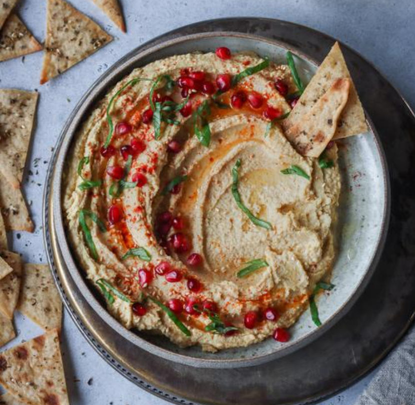

Hummus

Description
Hummus is a classic for a reason. This is a go-to hummus recipe. It's a great spread for sandwiches, wraps, and
crackers. It's a phenomenal dip for veggies. It can be used as a base for pasta sauces and salad dressings, and
it can be dolloped onto nourish bowls. Is there anything it can't do?
Ingredients
- 1.5 cups (246 g) cooked chickpeas
- 1 lemon, juiced
- 2 tbsp (30 ml) tahini
- 1 tsbp (15 ml) extra virgin olive oil
- 2 cloves garlic
- 1/2 tsp salt
- 1/4 cup (60 ml) ice water
Steps
- Add all of the ingredients, except for the water, to a food processor and blend on high until smooth.
- While the mixture is blending, in a thin and steady stream, add half of the ice water to the food
processor*. If desired, skip this step by simply adding the water in with the ingredients in step #1.
- Taste test the hummus. If too thick, add the remaining water. For a creamier consistency, add more olive oil
and/or tahini. For more zest, add more lemon juice. Plate, garnish, and serve!
Credit: Pick Up Limes